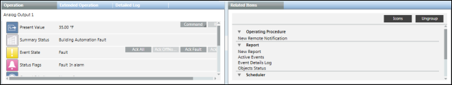
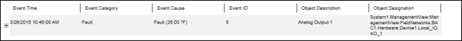
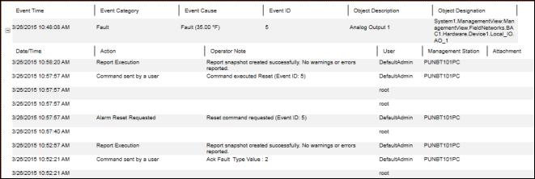

Viewing Event Details using Investigative Treatment
Scenario: You want to create an event details report that displays the details of a particular event using Investigative Treatment.
- Operating procedure templates (if present) are disabled.
- Ensure that a report containing the Event Details table is available and the Show in Related Items check box is selected
for this report or the HQ_EventDetailsLog report is imported.
- Double-click the event in the Event bar.
- The event details display in the Related Items tab.

- Perform the required steps to treat the event.
- Select the report containing the Event Details table from the Related Items tab.
- The report executes in the Secondary pane and the information related to the event time, category, cause, ID,
object description, and designation displays in the report. 
- Click before the event entry.
- Information related to the event treatment such as Time, Action, User Name, Management Station, Attachment,
Value, and Previous Value display as child records.
